12 SCREENS / HTML + PNG
从描述工作到团队使用
每张图片对应一份可打开的 HTML 原型。画面使用示例数据，供产品与工程实现时参考交互层级和布局。
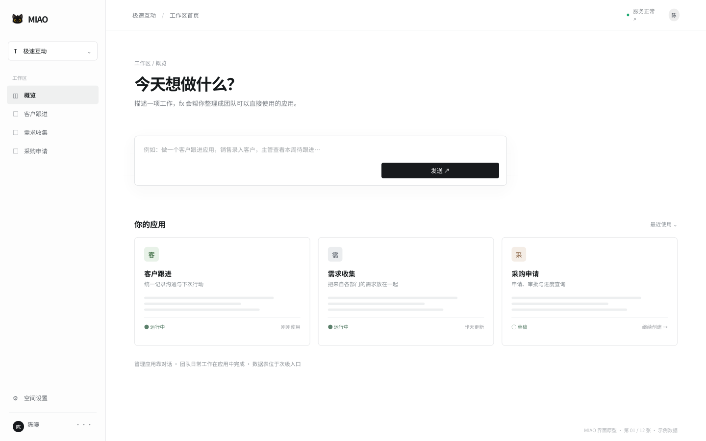
01 认识 MIAO企业技术评估 →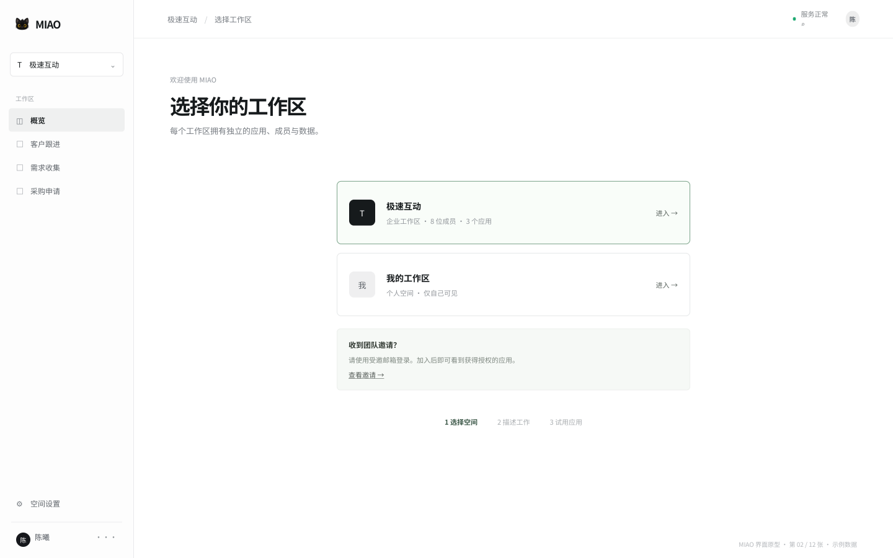
02 开始使用企业技术评估 →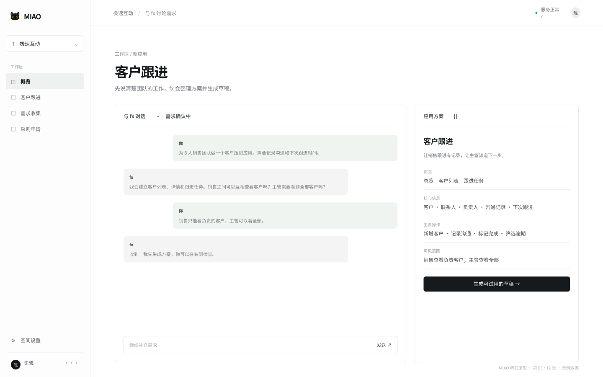
03 创建应用企业技术评估 →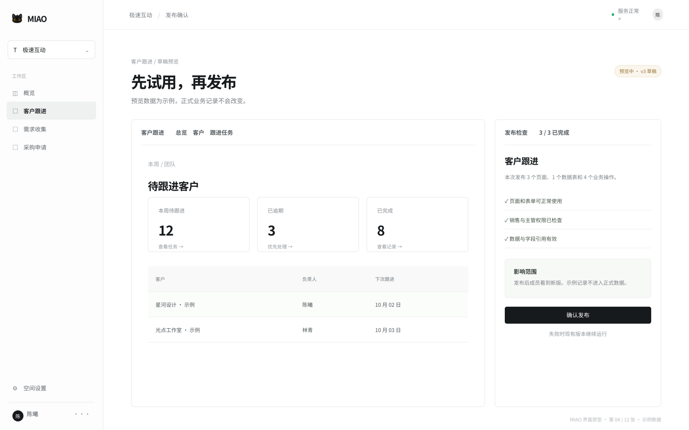
04 预览与发布企业技术评估 →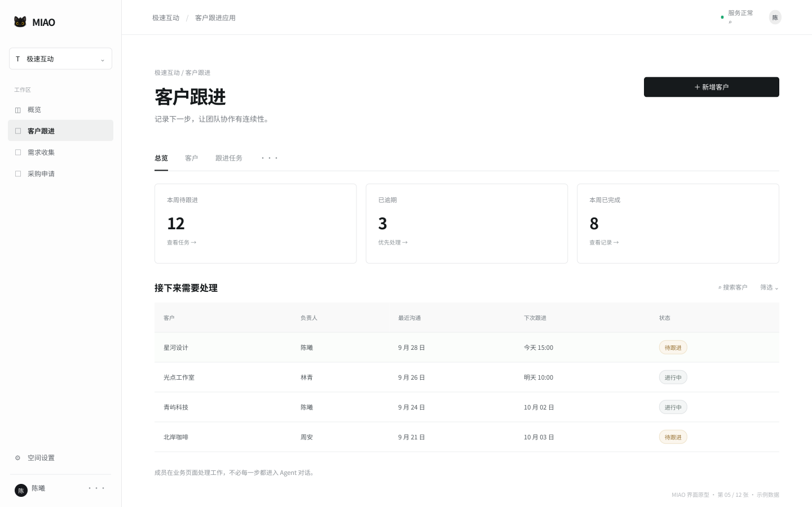
05 团队日常使用企业技术评估 →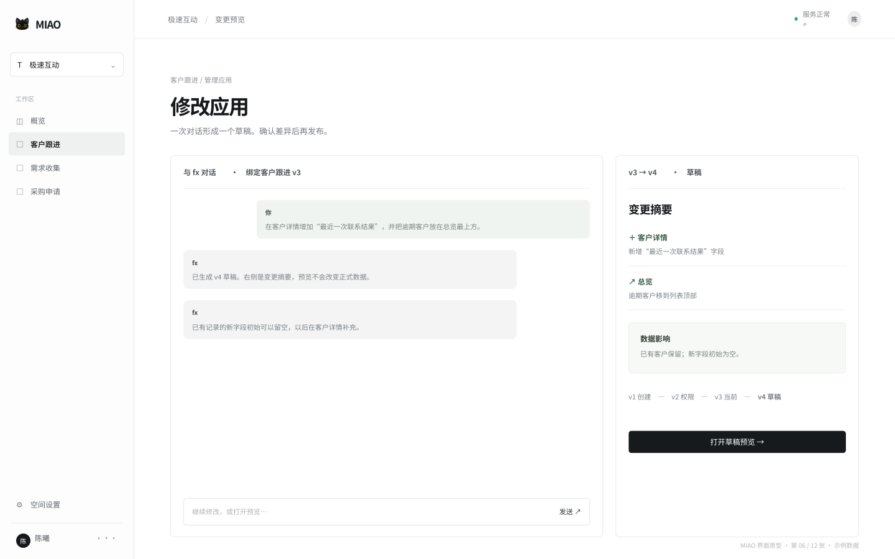
06 修改应用与版本企业技术评估 →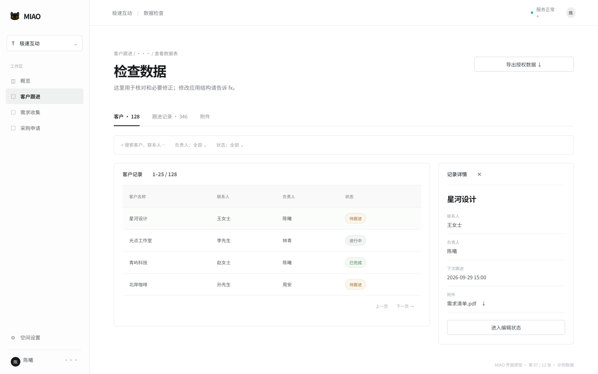
07 数据、附件与导出企业技术评估 →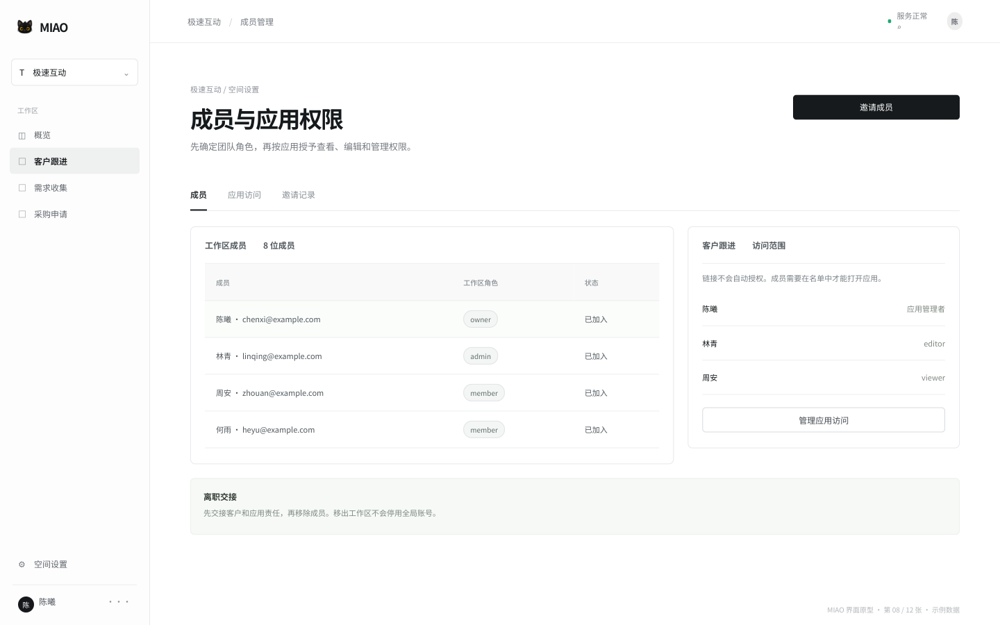
08 成员与权限企业技术评估 →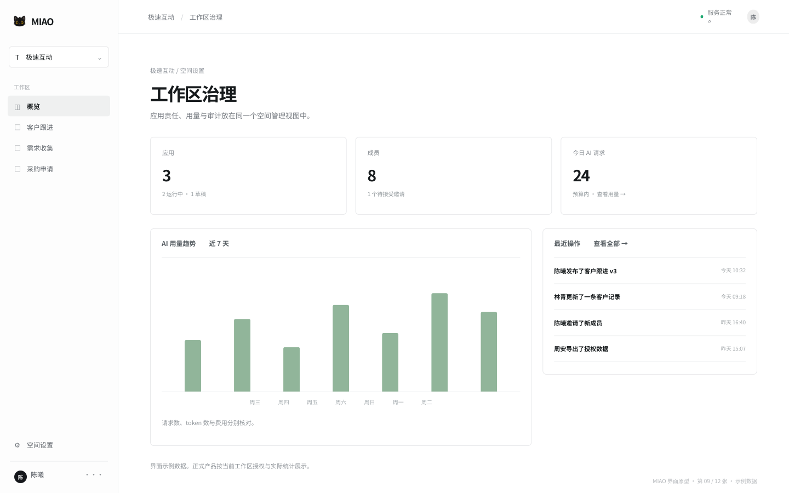
09 企业治理企业技术评估 →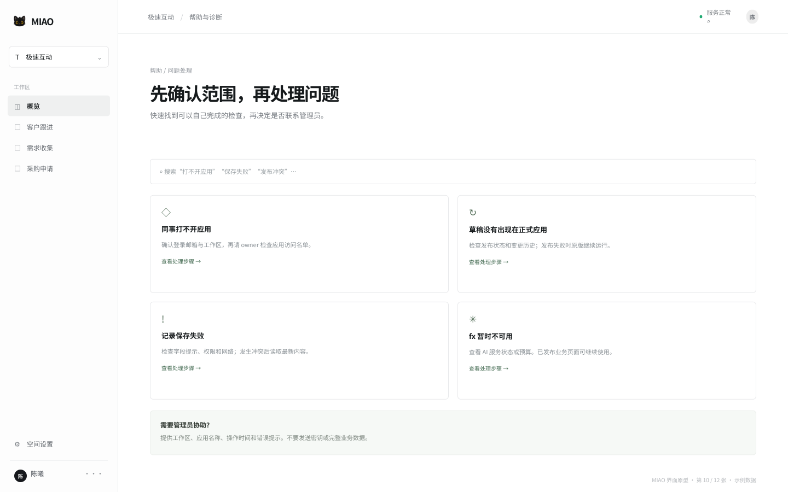
10 常见问题企业技术评估 →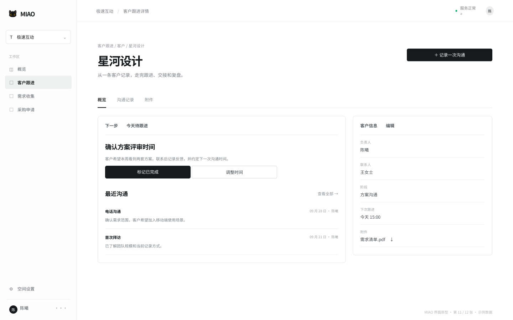
11 完整示例企业技术评估 →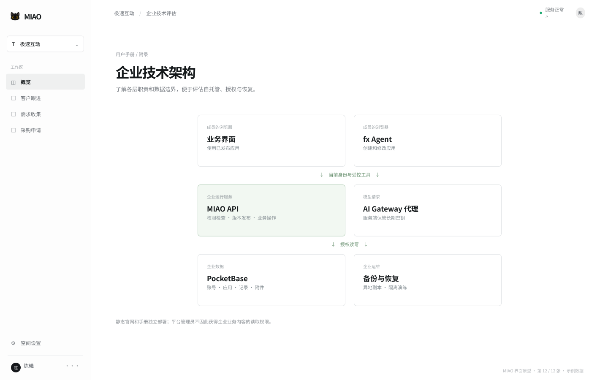
12 技术架构企业技术评估 →